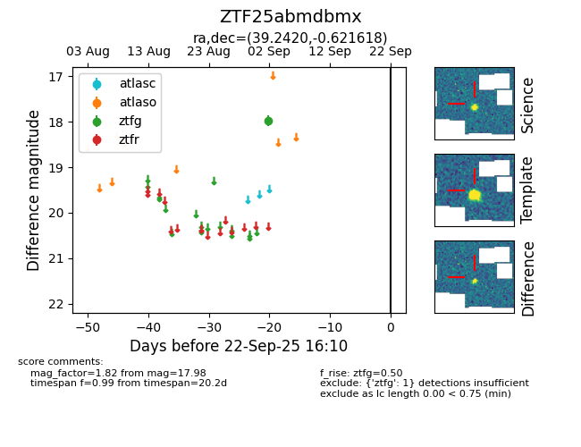

FINK: ZTF25abmdbmx
Lasair: ZTF25abmdbmx
ALeRCE: ZTF25abmdbmx
ZTF25abmdbmx (ztf,fink)
equatorial (ra, dec) = (39.2420,-0.62162)
galactic (l, b) = (171.0224,-53.34010)

last ztfg=17.98
1 ztfg detections